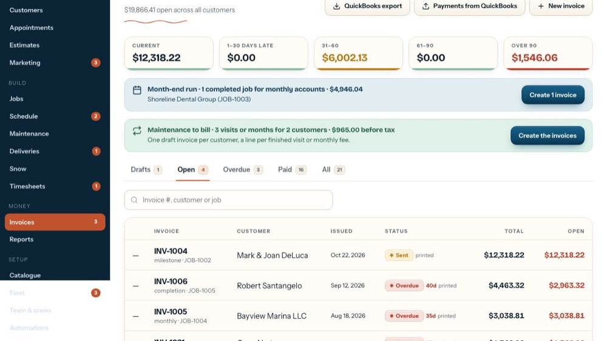
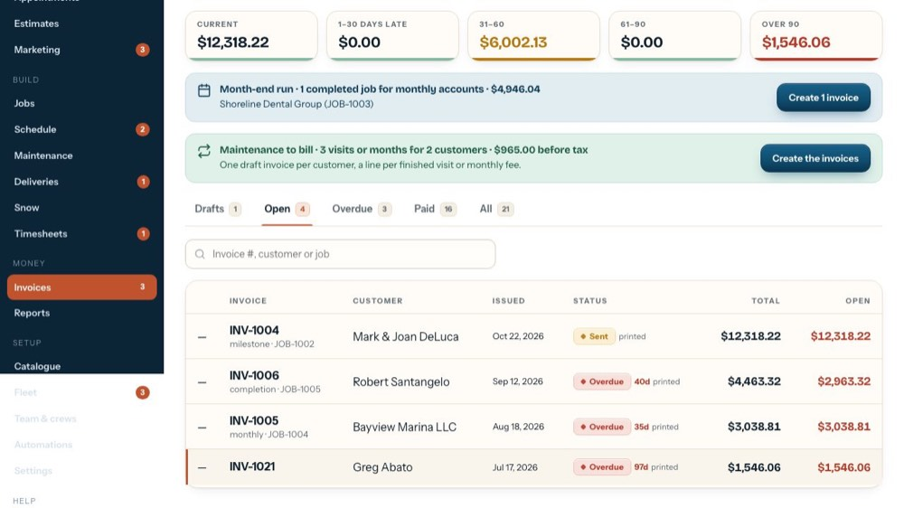
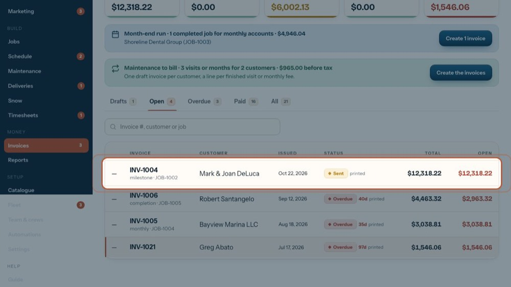
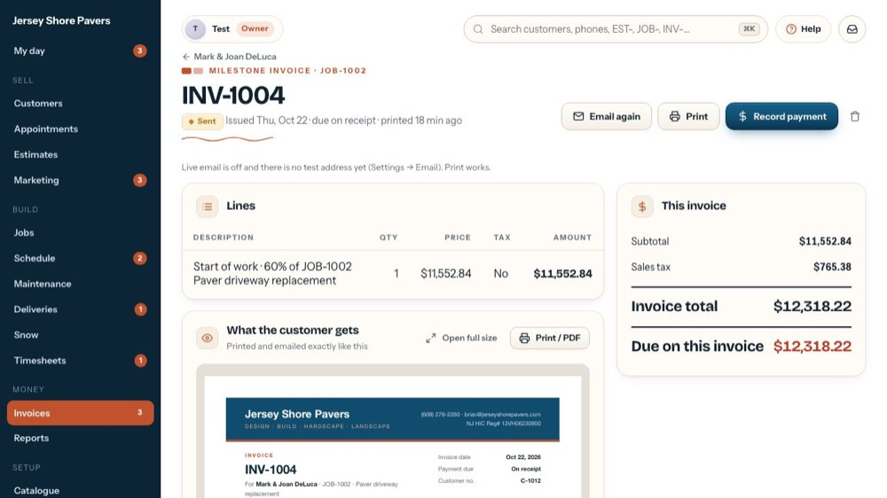
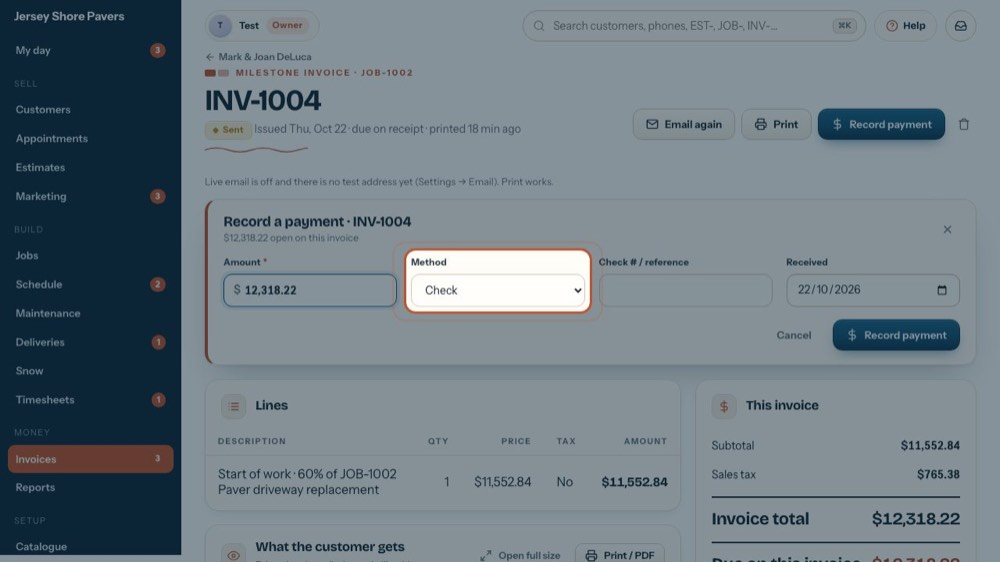
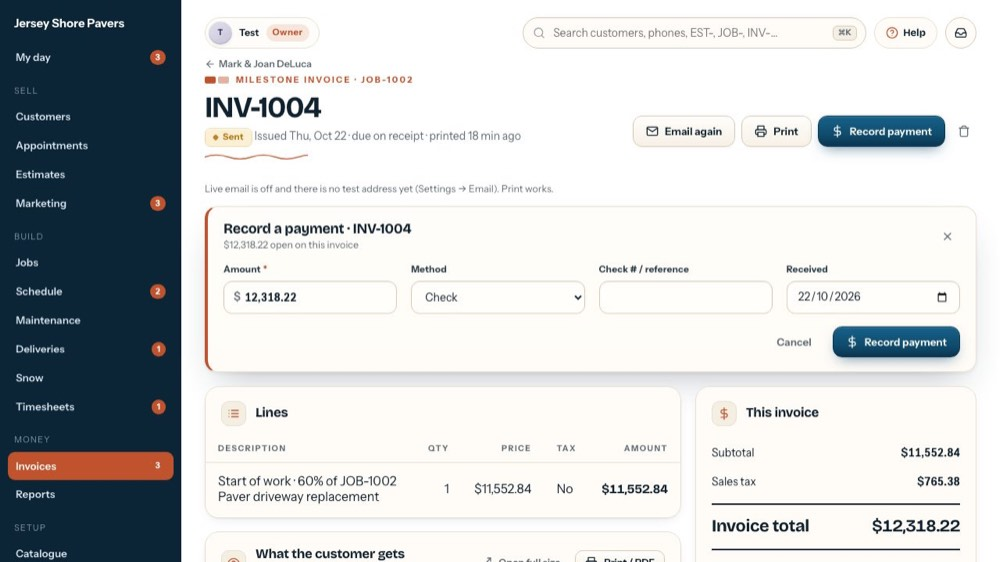

Charge cards on file, one or many, and log a declined card
In the office app, press Help and type charge cards on file, one or many, and log a declined card
: the tour plays on your own screen, with your own data.
-

1Open invoices
Cards are charged from the Open or Overdue tab.
-
 2
2Who has a card on file
A 💳 and the last 4 digits next to the customer means a card is on file. Those rows get a tick box on the left.
-

3Charge many at once
'Select all with a card' ticks them all (or tick rows one by one). 'Charge N cards' charges what's open on each and records card payments, after asking.
-

4Or one invoice
Open the invoice to charge just that one.
-
 5
5Charge card
With a card on file and money open, 'Charge card ••1234' shows here. It charges what's still open and records it as a card payment, after asking.
-

6Card declined
Declined at the terminal or in the batch? Card declined: note what the processor said. Record it emails the customer to update the card and puts a call on the office list.
-
 7
7Paid by card at the terminal
Record payment, then pick Card.
-

8Card and the surcharge
With Card picked, the card fee from Settings (Contract terms) shows as its own surcharge before you record it. Untick it to waive the fee.
-

9Close
The X closes the form without recording anything.